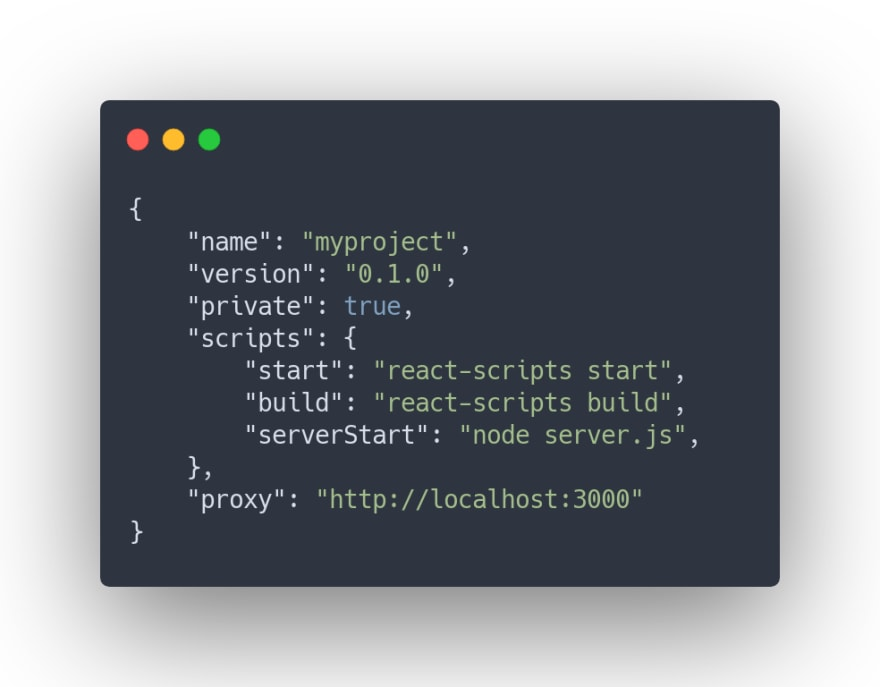
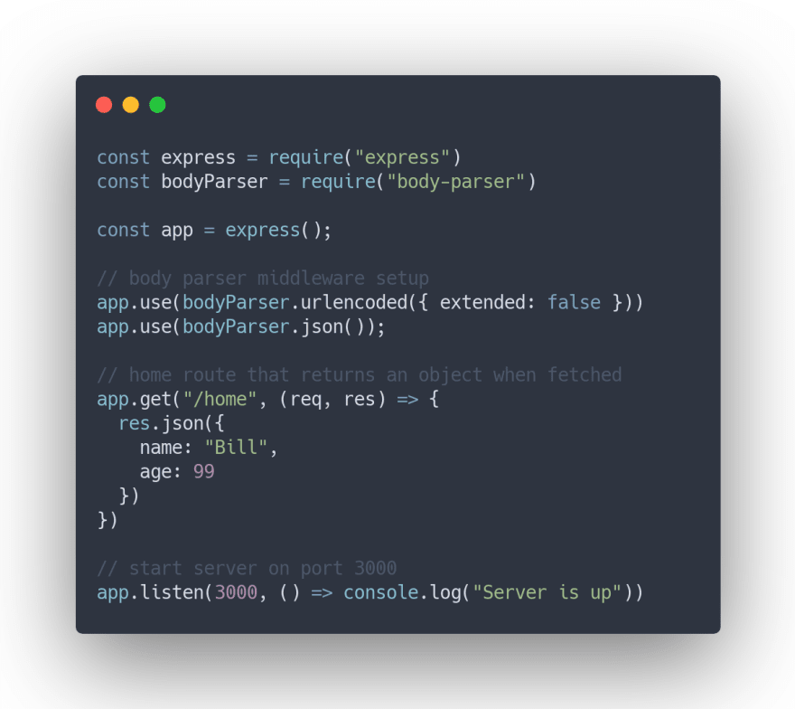
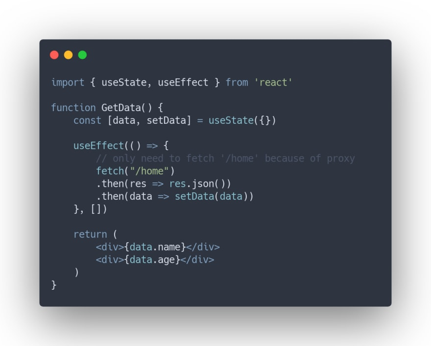
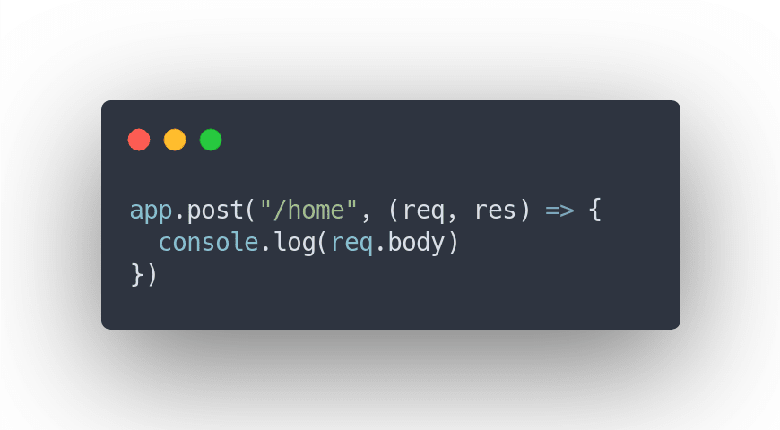
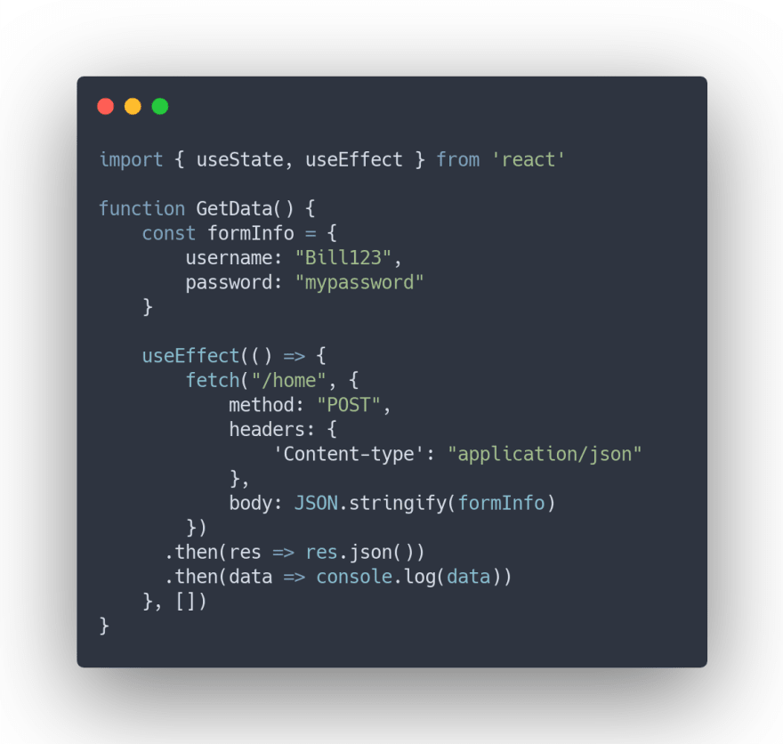

MERN Stack
The MERN (MongoDB, Express, React, NodeJS) stack is very popular for making full stack applications, utilizing Javascript for both the backend and frontend as well as a document-oriented or non relational database (MongoDB), meaning that it's structured like JSON rather than a large excel sheet like SQL databases are.
This stack uses Express for the backend, and Express typically accompanies a view engine like Pug or EJS to render HTML dynamically. However, the MERN stack introduces a problem. React renders the frontend code with JSX, so you can't use those view engines, and you instead need a new way to render backend data for the client. You might suggest using JSX as your backend view engine, but then you would be losing a lot of the functionality that React brings to the table, so that option isn't suitable.
Making GET and POST Requests
Thus, to connect a React frontend with a NodeJS backend, we need to utilize the useEffect hook and the async function fetch(). useEffect will allow us to only run our fetch request once (when the component gets mounted) which will avoid slowing down our app. Since fetch allows us to make GET and POST requests, we can make requests directly to our server to get data. But how will this work?
First of all, we need to do some configuration so that our react code can make fetch requests to the backend. We need to first create a package.json file and add a start script for both the frontend and backend code. For react, you can use npm run start in the terminal and for NodeJS, you can use npm run server Start after adding node server.js to the package.json as shown below (if your main server file is called server.js). You will also need to add a "proxy" key to your package.json that redirects fetch requests to the server port. So, if your NodeJS server is running on port 3000, you would add this:

Although, the port of the express server is important to note down, it doesn't really matter what port you run React. Now, before we make requests to the backend, let's set up the server code. We need to do npm install express body-parser which installs the "body-parser" package that is crucial for handling post requests. Body parser is a middleware, so we would add this to incorporate it.

In this snippet, I also added a home route with app.get and returned a JSON object for any request made to it, so that later on, we can get the data inside of React.
Moving on, your backend and frontend won't be able to connect to each other unless both are being run, so run npm run start and node server.js in the terminal throughout the development process to make sure that your proxies to the backend can be received. Once those two are runnning, you can use the useEffect hook in React to make a GET request to the server at any listed route.

This will return an object with the data that you supplied in the server and since fetch returns a promise, you can attach .then to finally get that data. But remember to add res.json() in your express code for the data being sent down to the client-side because it allows for you to handle the data like a Javascript object.
Now that you know how to get data from Express in React, let's find out how we can also post data, such as form information that needs to be added to a database, and utilize that data in Express.
To make a POST request, we need to set up a route to listen for post data in the server by using app.post. Since we set up the body-parser middleware already, any data that is posted to this route is accessible in req.body

Moving to React, we need to make another fetch call with useEffect, but this time, it needs some headers that tell the server how to interpret the request (it will interpret it as JSON in this case), and we need a body that supplies the data. Once we handle the promise, we can log out our data to the console to see if it works. Keep in mind that our fetch request can just have the end of the route (/home) because of the proxy that we specified in the package.json

Summary
There you have it! In summary, connecting a React frontend to an Express backend is simple. It just requires you to fetch data from the port that the backend server is located on. I didn’t cover PUT or DELETE requests, but those are very similar to POST requests, so you can learn how to do those very easily with the knowledge I gave above. And I really recommend learning the MERN stack if you’re not sure what full stack development stack to choose because MERN is extremely powerful once you learn how to connect React with Express.